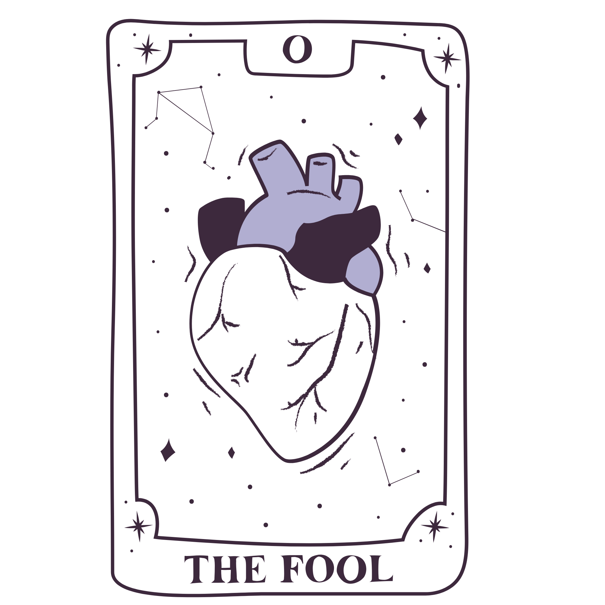
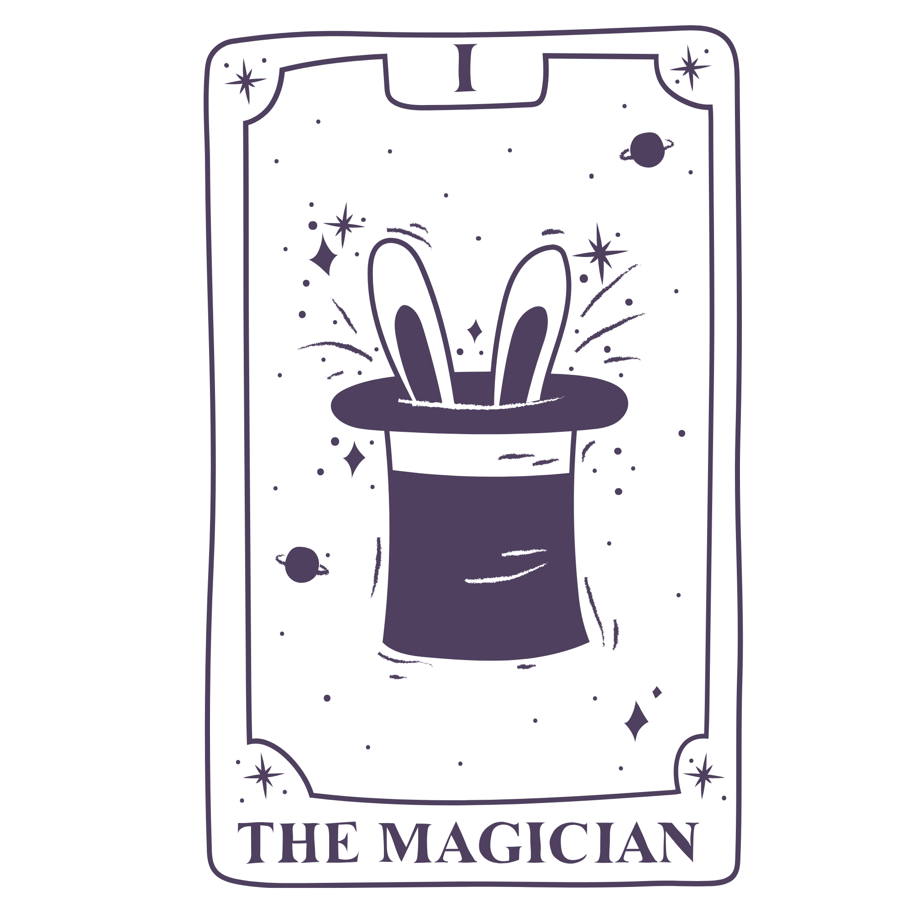
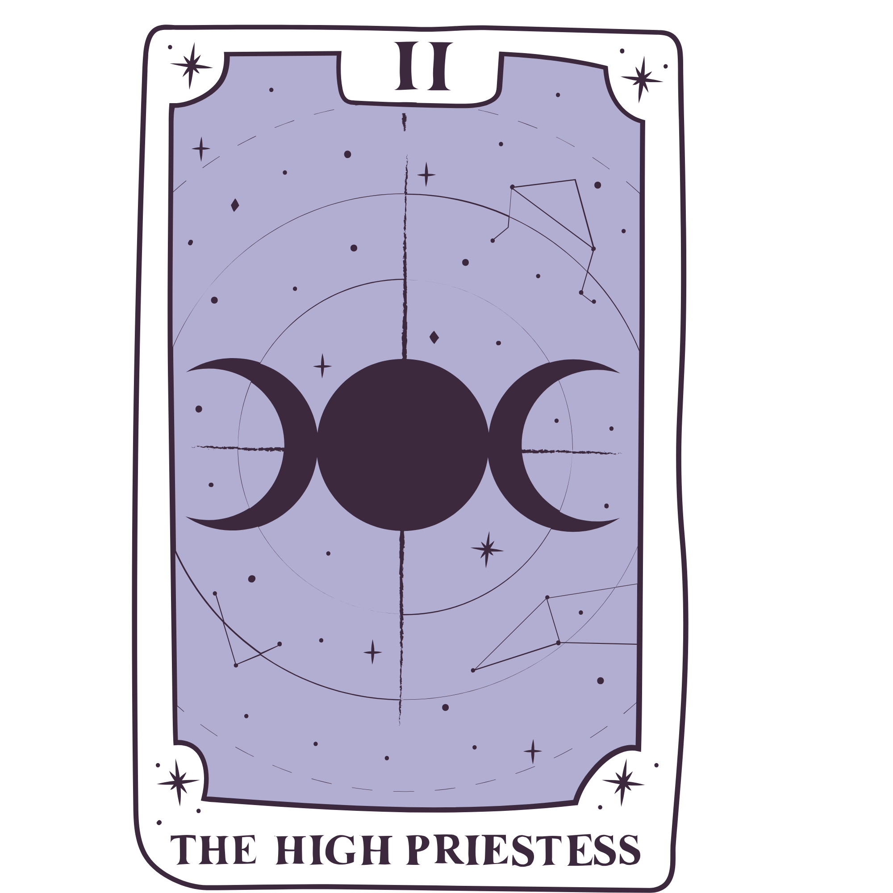
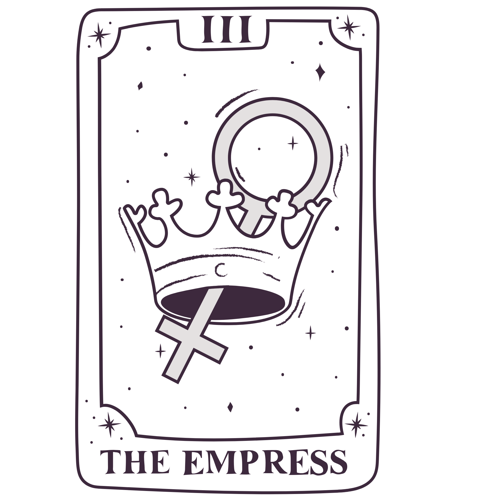

Simboliza inícios, espontaneidade, liberdade e a coragem de saltar para o desconhecido. Representa a energia pura para recomeçar, confiar na intuição e viver o momento com leveza, sem planejamento excessivo. Pode indicar riscos e impulsividade, mas principalmente otimismo e novas aventuras.

representa o poder da manifestação, iniciativa, habilidade e recursos. Ele indica que você possui todas as ferramentas necessárias para transformar sonhos em realidade através da ação consciente e inteligência.

Arcano maior número II, simboliza intuição, mistério, sabedoria interior e o subconsciente. Ela sugere um tempo de pausa, introspecção e escuta interior, aconselhando a confiar nos instintos e a não agir precipitadamente.

simboliza fertilidade, abundância, criatividade e o poder da natureza. Representa nutrição, amor materno, sensualidade e sucesso, indicando um período favorável para dar vida a novos projetos, colher resultados positivos e nutrir relacionamentos.